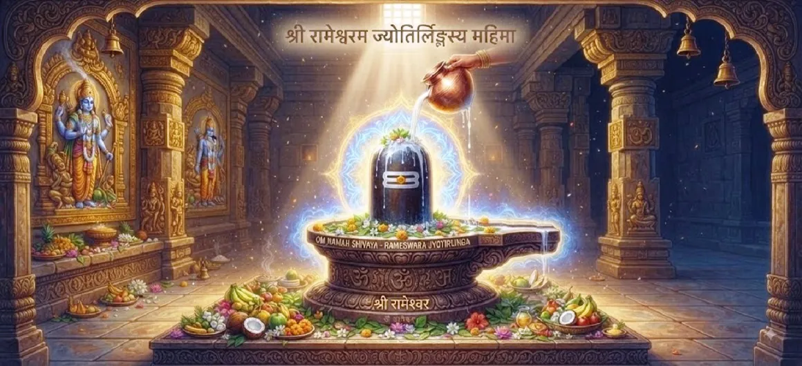

The Glory of Rameshvara
The thirty-second chapter of the Kotirudra Samhita illuminates the divine origin, sacred establishment, and supreme spiritual majesty of Sri Rameshvara Jyotirlinga.
Chronicling how Lord Rama Himself consecrated a linga of Mahadeva before crossing the ocean, this chapter exemplifies the pinnacle of devotion and cosmic harmony.
It stands as an immortal beacon of grace for all seekers of liberation.
Chapter 32 Highlights
Divine Setup
The sacred consecration of the linga by Sri Rama.
Ocean Crossing
Seeking Mahadeva's blessings to conquer impossible odds.
Jyotirlinga Glory
The unique spiritual potency of Rameshvara shrine.
Sin Absolution
Cleansing of karmic burdens through sincere worship.
Cosmic Unity
The harmonious bond between Vishnu avatar and Shiva.
Supreme Moksha
Attaining ultimate peace and liberation at Rameshvara.
Core Topics in This Chapter
- 01Sri Rama's Worship of Lord Shiva→
- 02Establishment of the Rameshvara Linga→
- 03Invocation of Divine Grace and Victory→
- 04Significance of Setubandha and Worship→
- 05Blessings Bestowed by Rameshvara→
- 06Absolution of Major Sins→
- 07The Non-Difference Between Vishnu and Shiva→
- 08Merits of Pilgrimage to Rameshvara→
- 09Attaining the Supreme Abode→
- 10Transition to Chapter 33→
Sri Rama's Worship of Lord Shiva
Before waging war against Ravana and crossing the ocean to Lanka, Sri Rama desired to install a sacred linga of Lord Shiva to invoke divine grace and victory.
He demonstrated that even the Supreme Lord in human form practices absolute devotion to Mahadeva.
Establishment of the Rameshvara Linga
With profound devotion and meticulous Vedic rituals, Sri Rama consecrated the sand linga on the southern shore, naming the deity Rameshvara ("the Lord of Rama").
Thus, the sacred shrine became an eternal anchor of spiritual power.
Invocation of Divine Grace and Victory
Lord Shiva, immensely pleased with Rama's worship, appeared before him and blessed him with invincibility, assuring him of complete victory over demonic forces.
Divine assurance eliminated all doubts from the righteous army.
Significance of Setubandha and Worship
The text extols the holy region of Setubandha Rameshvara, declaring that bathing in its sacred waters and worshipping the linga frees a person from all sins.
It is revered as one of the most purifying pilgrimage spots on earth.
Blessings Bestowed by Rameshvara
Devotees who offer prayers at Rameshvara are blessed with health, wealth, removal of fear, harmonious family life, and steady spiritual advancement.
No sincere prayer offered here goes unanswered by Lord Shiva.
Absolution of Major Sins
The chapter emphasizes that even grave karmic transgressions are dissolved instantly when a devotee takes refuge at the feet of Lord Rameshvara with a repentant heart.
Grace triumphs over past misdeeds.
The Non-Difference Between Vishnu and Shiva
By showing Sri Rama (an incarnation of Vishnu) worshipping Lord Shiva, the scripture highlights the ultimate truth: Vishnu and Shiva are one supreme consciousness manifesting in different forms.
Sectarian division dissolves in the light of true wisdom.
Merits of Pilgrimage to Rameshvara
Undertaking a pilgrimage to Rameshvara and performing ritual ablutions grants the same spiritual merit as performing grand Vedic sacrifices across multiple lifetimes.
It is a direct pathway to divine grace.
Attaining the Supreme Abode
Those who leave their mortal coils while meditating upon Rameshvara attain union with the supreme light, transcending rebirth and entering eternal bliss.
The soul rests forever in divine peace.
Transition to Chapter 33
Having established the supreme glory of Rameshvara Jyotirlinga, the narrative prepares to explore the moral and spiritual lesson found in the Story of Sudharma and Sudeha.
Readers are invited to continue to Chapter 33.
Key Teachings of Chapter 32
Exemplary Devotion
Sri Rama's worship sets the highest standard of bhakti.
Sacred Waters
Bathing at Setubandha cleanses all heavy sins.
Divine Victory
Shiva's grace ensures triumph over all obstacles.
Cosmic Unity
Vishnu and Shiva are one undivided reality.
Pilgrimage Merit
Visiting Rameshvara grants eternal spiritual rewards.
Ultimate Moksha
Devotees attain supreme peace and union with Shiva.
Spiritual Reflection
The glory of Rameshvara Jyotirlinga transcends historical narrative, serving as a profound metaphysical bridge between the preserver of the universe (Vishnu) and its destroyer of ignorance (Shiva). When Sri Rama worshipped Mahadeva before His historic battle, He imparted a timeless lesson to humanity: no endeavor can truly succeed without spiritual alignment, and no power is greater than divine grace. Visiting this sacred shrine or meditating upon its glory awakens the dormant devotion within the heart, dissolving karmic obstacles and guiding the seeker toward absolute liberation.
Living the Message of Chapter 32
Emulate the humility and devotion of Sri Rama by placing spiritual surrender at the center of your daily life and undertakings.
Recognize that all forms of the Divine are expressions of one infinite consciousness, and seek Mahadeva's grace to overcome internal obstacles and worldly suffering.
Let devotion be your bridge across the ocean of samsara.
Key Spiritual Concepts
The sacred shrine established by Sri Rama on the southern shore.
The purifying sanctity of the bridgehead region and waters.
The absolute non-difference between Vishnu and Shiva.
The wiping away of major sins through worship and pilgrimage.
Victory over negative forces granted by Shiva's grace.
Union with the supreme light upon leaving the mortal frame.
Chapter Summary
Kotirudra Samhita Chapter 32 celebrates the glorious establishment and divine majesty of Sri Rameshvara Jyotirlinga. By detailing how Sri Rama worshipped Mahadeva before crossing to Lanka, the chapter emphasizes the unity of Vishnu and Shiva, the immense purifying power of pilgrimage, and the supreme spiritual rewards granted to sincere devotees. This sets the stage for Chapter 33, which recounts the moral lesson found in the Story of Sudharma and Sudeha.
Frequently Asked Questions
1. What is the central theme of Kotirudra Samhita Chapter 32?
Chapter 32 explores the divine glory, sacred establishment, and immense spiritual merits associated with Sri Rameshvara Jyotirlinga.
2. How does Chapter 32 connect with the previous chapter?
While Chapter 31 discussed the general fruits of Shiva Bhakti, Chapter 32 exemplifies those fruits through the historic worship of Shiva by Sri Rama at Rameshvara.
3. Who established the Rameshvara Jyotirlinga?
The Rameshvara Jyotirlinga was established and worshipped by Sri Rama before crossing the ocean to Lanka.
4. What are the primary benefits of worshipping Rameshvara?
Worshipping Rameshvara absolves serious sins, grants victory over obstacles, bestows supreme peace, and secures ultimate liberation.
5. What narrative follows this chapter?
The narrative transitions to Chapter 33, 'The Story of Sudharma and Sudeha'.
6. Why is Rameshvara considered a unique Jyotirlinga?
It stands as a sublime bridge of devotion between Lord Vishnu's avatar (Sri Rama) and Supreme Lord Shiva, uniting cosmic forces.
“The holy shrine of Rameshvara, consecrated by Sri Rama, washes away all sins and grants supreme liberation to the devoted soul.”
Continue Through Kotirudra Samhita
Chapter 32 explores the glory of Rameshvara. Continue to Chapter 33, The Story of Sudharma and Sudeha.